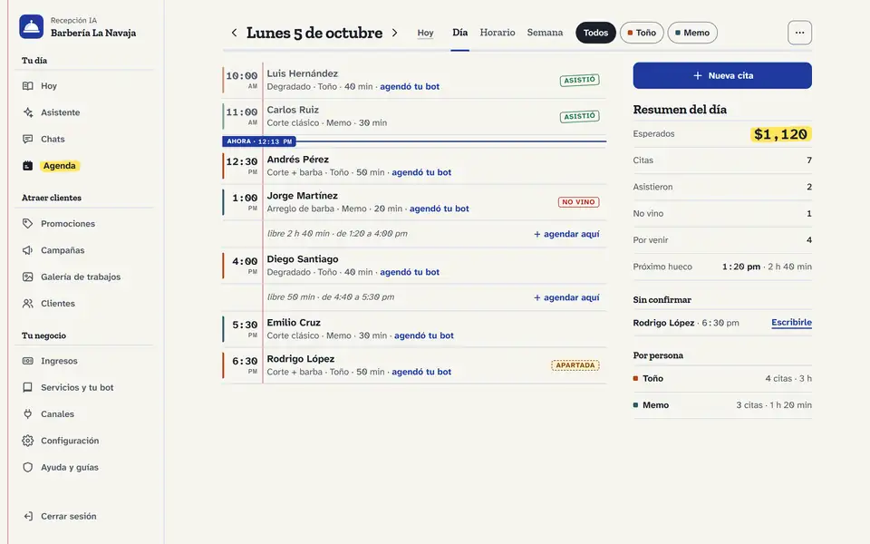

Producto propio · piloto
Recepción IA
Una recepcionista con IA para negocios pequeños: contesta por WhatsApp y Telegram, agenda, reagenda y cancela sin dobles reservas. Dos asistentes de IA con tool calling trabajan sobre la agenda, las colas y las reglas de negocio en PostgreSQL. El asistente del dueño tiene más de 30 herramientas y nunca cambia nada solo: propone y el dueño aprueba con un clic. Evaluado con el modelo real por estado de la base de datos: 0 errores de cita, 21/21 ataques bloqueados. En producción desde septiembre de 2026, con un piloto real en una veterinaria.
Rol: Diseñé el producto, definí la arquitectura y los contratos de API, dirigí la construcción y opero el piloto en producción.
- 73 migraciones
- Más de 3,300 pruebas automatizadas
- TypeScript
- Node 24
- Fastify
- pg-boss
- PostgreSQL 18 (multi-tenant, RLS)
- React 19 (PWA)